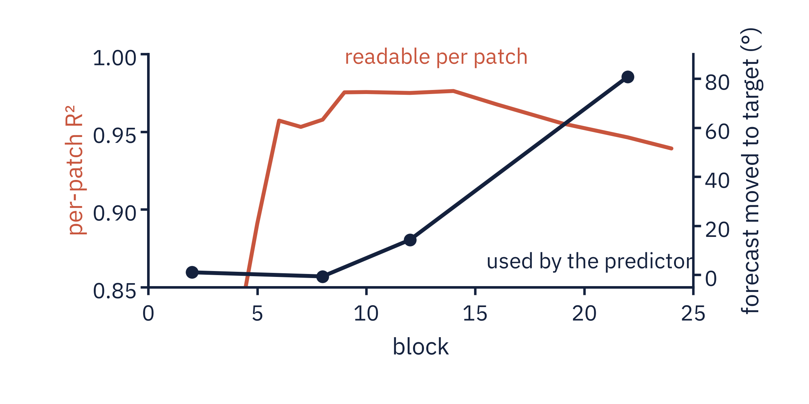

<section id="p2-readuse" data-transition="fade" style="background:#FBFBF8; color:#14213D; font-family:'IBM Plex Sans', Arial, sans-serif; padding:128px 128px 160px; display:flex; flex-direction:column; gap:48px">
<h2 style="font-family:'Source Serif 4', Georgia, serif; font-size:56px; font-weight:600; line-height:1.1; letter-spacing:-0.5px; width:1600px">Late blocks trade readability for predictor use</h2>
<div style="display:flex; gap:40px; align-items:center"><div style="width:1164px; background:#FFFFFF; border:1px solid #E4E2DC; border-radius:12px; padding:32px"></div><div style="flex:1; display:flex; flex-direction:column; gap:28px"><table style="width:480px; font-size:28px; color:#14213D"><tr><td style=" width:66%; color:#5B6472">per-patch R², block 14</td><td style=" width:34%; font-family:'Source Serif 4', Georgia, serif; font-weight:600; color:#14213D; text-align:right">0.976</td></tr><tr><td style=" color:#5B6472">per-patch R², block 24</td><td style=" font-family:'Source Serif 4', Georgia, serif; font-weight:600; color:#14213D; text-align:right">0.939</td></tr><tr><td style=" color:#5B6472">forecast error, block-22 edit</td><td style=" font-family:'Source Serif 4', Georgia, serif; font-weight:600; color:#C8553D; text-align:right">11.3°</td></tr></table><p style="font-size:32px; font-weight:600; line-height:1.3; color:#14213D">Most mid-depth edits are repaired.</p></div></div>
<p style="position:absolute; left:128px; bottom:64px; width:1664px; font-size:24px; color:#5B6472">C · Predictor</p>
<aside>~70 s. Sources: results/p1a_perpatch_direction_vjepa2.json (curves.perpos_mean_r2), session2_predictor_native_readout.json (per_layer.*.spline and zero), session2_propagation.json; points 16 and 19 of the forecast curve are added from results/p5_repair_attribution_L12.json, key forecast_response_by_edit_point, when it lands. Per-patch R squared peaks at 0.976 at block 14 and declines to 0.939 at block 24, over the same late blocks where edits start to move the forecast. The navy curve is the unedited forecast error minus the edited one, for the interpolating spline. The downstream test: edit the encoder, run V-JEPA 2's predictor, and read the direction of its forecast with a probe fitted on predictor outputs from disjoint clips. That readout gets the unedited forecast to 8.9 degrees and 11.8 pixels, and a real counterfactual context recovers 96 percent of the direction change. 200 carrier clips times 4 held-out targets. Unedited, the forecast is 92.1 degrees from the target. Edits at blocks 2, 8 and 12 leave it within about 15 degrees of that. At block 22 the interpolating spline brings it to 11.3 degrees, radius-matched 16.3, probe-QR 17.1, the chord 27.2 at its own norm, the smoothing spline 44.2, random 85.7. Inside the encoder, smoothing-spline, chord and probe-QR edits at blocks 2, 8 and 12 are undone within four blocks: the readout returns to the clip's true direction. The interpolating spline at block 12, on the label-free order, is the exception: it stays 62 degrees from the true direction at block 16, and still barely moves the forecast. Read along the path at block 22, the spline's forecast sweeps through the intermediate directions while the chord's stays at the source, then jumps, with its forecast radius collapsing mid-path; paired spline minus chord is minus 13.4 degrees overall and minus 31.3 at shifts of 135 degrees or more. At one common edit norm the spline is 8 to 13 degrees closer at block 22; at the encoder output the lead shrinks to 2 degrees and reverses at the chord's norm. Limits: a linear probe on the pooled forecast, not a rendered future, and four targets in one 45-degree arc.</aside>
</section>
